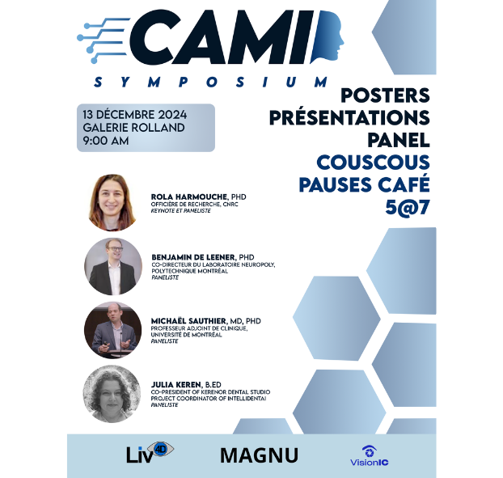

LIV4D, MAGNU et VISIONIC se retrouvent pour la prochaine édition du mini-symposium, désormais le Symposium Computer Analysis and Medical Imaging ! Découvrez nos résumés étudiants, nos posters et le programme de l'édition 2024-2025 !

Bienvenue à notre SymposiumCAMI à Polytechnique Montréal
Le Symposium CAMI, créé par les étudiants et les laboratoires de Polytechnique Montréal sous la direction du Prof. Farida Cheriet, Prof. Lama Seoud et Prof. François Guibault, promeut les avancées dans l'information médicale et les applications de l'IA dans les soins de santé. Cet événement dirigé par des étudiants réunit des chercheurs et des cliniciens pour explorer l'imagerie médicale, le diagnostic et le soutien à la décision pilotés par l'IA. À travers des discussions collaboratives et des présentations, le symposium favorise l'innovation et vise à rapprocher la technologie et la médecine pour améliorer les soins aux patients et la précision dans les soins de santé.
Notre lieu La Galerie Rolland
6e étage, Bâtiment principal (B-600.16)
Les panélistes
Rola Harmouche, PhD
Chargé de recherche, CNRC
Benjamin De Leener, PhD
Codirecteur du laboratoire NeuroPoly, Polytechnique Montréal
Michael Sauthier, MD, PhD
Professeur associé et pédiatre, Université de Montréal
Julia Keren, B.Ed
Co-Président de Kerenor Dental Studio, Responsable du Laboratoire Dentaire
Quatre intervenants invités - Rola Harmouche, Michael Saunthier, Benjamin De Leener et Julia Keren discutent de l'IA en médecine, avec une animation du Prof. Lama Seoud
LIV4D, MAGNU ET VISIONIC
Le Symposium CAMI est une conférence clé pour l'imagerie médicale et l'IA, réunissant des chercheurs, des cliniciens et des experts du secteur pour explorer les innovations dans l'imagerie pilotée par l'IA. Il couvre des sujets tels que l'analyse d'images, le diagnostic et la planification chirurgicale, favorisant la collaboration pour améliorer la médecine de précision et améliorer les soins aux patients.
Pour toute demande de renseignements, contactez-nous : M-3202


.png)